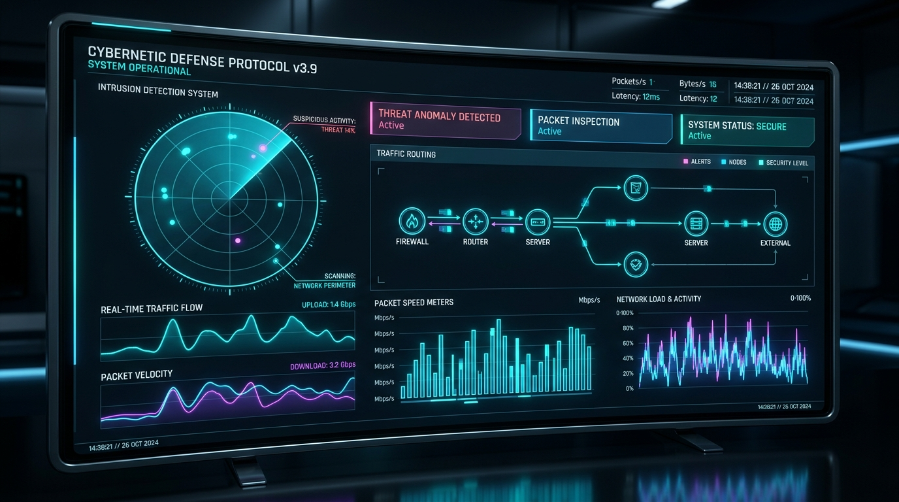

A fun, visual, simple-English master guide to your cybersecurity system. Watch how artificial intelligence inspects network packets in real-time and stops hackers before they cause harm.
Your computer's network card listens to all raw data packets flying past on the wire using Scapy. It doesn't read private messages—it just records volume, speed, and door numbers.
Raw hexadecimal internet packets are converted into 8 simple numbers: How long did they talk? How many bytes? Did they knock on 80 different doors in 1 second?
An ensemble of 100 trained decision trees reviews the 8 numbers. If the pattern looks like an attack, it sounds a 100% Alarm and alerts the security administrator!
| Feature Name | What It Means in Plain English | Normal Browsing Value | Cyber Attack Value (DDoS / Scan) |
|---|---|---|---|
| duration | How many seconds the connection stayed open | 5.0 to 60.0 seconds | 0.1 to 1.0 seconds (lightning burst) |
| src_bytes | How much data the client sent to the server | 1,000 bytes (small request) | 50,000+ bytes (massive flood) |
| dst_bytes | How much data the server replied with | 2,000 bytes (web page returned) | 0 to 100 bytes (server couldn't reply) |
| packet_count | Total number of packets sent back and forth | 30 packets | 700 to 5,000+ packets |
| connection_rate | How many new connections opened per second | 3 connections / sec | 100+ connections / sec (stressing server) |
| failed_connections | Connections that were closed or rejected | 0 (clean conversation) | 30+ (guessing passwords or closed ports) |
| unique_ports | How many different service doors were knocked on | 2 ports (port 80 & 443 for web) | 80+ ports (Port Scanning tool like Nmap) |
| syn_packets | Initial handshake greetings ("SYN" packets) | 5 handshakes | 400+ handshakes (SYN Flood DoS attack) |
Watch Scapy packets stream through the AI classifier in real-time. Click any packet row to inspect raw packet headers and the extracted 8-feature vector!
| Timestamp | Protocol | Source Address | Destination Address | Length | Packet Summary / Flags | AI Classifier Verdict |
|---|
Drag the sliders or click a preset button below to see how the AI Brain evaluates traffic in real-time!
Change the parameters to see the threat score react live.
All network metrics are within healthy limits.

Rotating phased-array sonar tracking live IP endpoints. Hover or click blips on the radar scope to lock onto target telemetry and verify AI anomaly detection.
Simulates a user visiting a webpage like Google or YouTube.
Simulates an attacker running automated hacking tools.
Here is your exact journey from zero to a live cyber defense system:
Created Python 3.12 virtual environment (.venv) to safely isolate project dependencies away from system Ubuntu packages.
Configured train_model.py with 8 high-impact network telemetry features. Both Test 1 (Safe) and Test 2 (Attack) pass with 100% precision.
Built src/models/train.py with a 100-tree Random Forest Classifier. Automatically balances class weights and exports serialized binary to models/intrusion_detector.joblib.
Wire up src/capture/packet_sniffer.py using Scapy to capture live Ethernet packets directly from your Wi-Fi or Ethernet card and stream them to the AI.
Launch an interactive web dashboard in src/dashboard/app.py with live threat counters, network speed gauges, and automatic email alert dispatches.
Welcome to our team engineering documentation! This system is designed so that every team member—regardless of prior background—can understand the architecture and contribute effectively.
No SQL: We do not use relational databases. Traffic is processed in memory or CSV.
No Complex Math from Scratch: AI algorithms are provided by Scikit-Learn.
No Frontend HTML/CSS/JS: The UI is created in 100% Python using Streamlit.
Pure Python: 100% of sniffer, AI, and dashboard are written in Python.
Scikit-Learn: Powers the Random Forest classification brain.
Scapy & Streamlit: Handles live packet capture and telemetry dashboard.
Tools: Python, NumPy & Pandas
Turns raw network packet counts into structured tables (DataFrames). Cleans datasets (NSL-KDD / CIC-IDS2017) and normalizes features for the AI.
df = pd.DataFrame([{...}])
👥 Role: Feature Pipeline & Data Cleaning
Tools: Scikit-Learn & Joblib
Implements Random Forest classifiers and Isolation Forest anomaly detectors. Tunes detection thresholds and saves serialized models.
model.predict_proba(traffic)
👥 Role: Model Training & Threat Inference
Tools: Scapy & Raw Sockets
Captures live network packets from physical network cards (eth0 / Wi-Fi), aggregates them into 5-second flow windows, and extracts the 8 features.
sniff(count=5, prn=callback)
👥 Role: Packet Capture & Sniffing Engine
Tools: Streamlit & Python Alerting
Builds the security operations center (SOC) dashboard. Displays live traffic graphs, intrusion counters, and dispatches automated alerts.
st.metric("Attack Risk", "99%")
👥 Role: Web Dashboard & Alert Dispatcher
IP = Street Address. Port = Room Number (Port 80 = Living room/Web, Port 22 = Office/SSH). Trying 80 ports in 1 second is a Port Scan.
A SYN packet is saying "Hello?". A normal user sends 1 and talks. An attacker sends 1,000 in 1 second and runs away (SYN Flood DoS).
A phone conversation summary. Instead of 1 sentence, the AI looks at the whole conversation: duration, byte counts, and packet rates.
The absolute best, free, beginner-friendly resources to learn these skills: